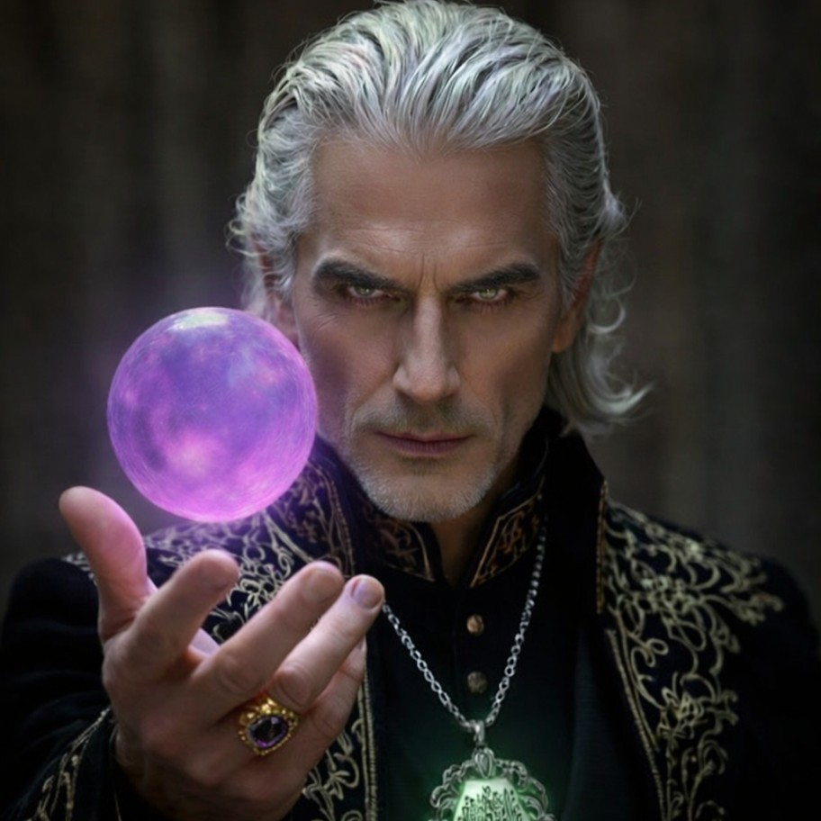

מאמר מדהים עם רשימת השערות נחמדות לגבי הספר | מאת: ה.ג

שווה לקורא!




אם הגעת לפה, כנראה שעברת כבר על כככככללל האתר.!
אנו עושים מאמצים כדי לתת לכם את מירב הסיפוק והכיף והתוכן.
על כן נשמח לפידקבקים תגובות ושיתופים , ניתן גם לשלוח מאמרים, חידונים בטופסי פרומס, ותמונות
מיוחדות
בAI .
הכל למייל הזה: